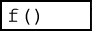

I've loaded the example graph on the index page with some real data collected from an experimental fridge for you to try. Below
are a few things for you to try to get fimilar with the avaliable controls
Mouse over and you will see a cross hairs indicating position x and y. The numerical precision of the indicators is sensible for the scale.
Click and drag a rectangle over a section to zoom in. Mobile users can use two fingers to draw out a rectangle, then release to zoom.
Single click to use the auto-zoom (can see everything). Mobile users can use the 'Auto Zoom' button in the lower left.
Right click to zoom out. Mobile users can use the 'Zoom Out' button in the lower left.
Hovering over the top and bottom will reveal buttons and menus.
On the bottom buttons, click the button. It changes the y axis to logarithmic (base 10).
Start zooming around, see how the y axis scale always looks good (even when zoomed in tight).
At the top: click the button to change to measure mode. (You started in the zoom mode)
Click and drag to measure deltas, measure the gradient g=, and measure the time-constant of an exponential decay tau=. (this is an log-lin graph now after all). For examples: find out the heights of the peaks on the pink line (still)? Or how long did the step in the pot pressure last near -2 hours? What was the rate of the acp40out near the beginning?
Reload the page. Your zooming in and the axis choice are as you left them. Everything you change on the graph is saved to LocalStorage .
Data looking a bit rough? hover over the bottom to find the  menu button. Click it to reveal some functions.
Find and click the smooth button. This runs a smoothing transform on the data. You can see the y-axis title has changed to reflect you choice, and under the subtitle there is [smooth] showing the stack of transforms. All of the transforms in the menu can stack on top of each other, except for reset that removes all transforms, and pop that removes just the last one.
Not enough smoothing? Some transforms can modify their arguments by clicking on it again. Here it changes the smoothing aperture, you can see the y-axis change to show this too.
You can switch lines on and off in the lines menu.
Try out some regression analysis in the fits menu.
Data Summary . Pulls data from different sources, Three graphs on a screen. Shows setting defaults. A frozen snapshot from a live page.
Exponential Data . Mobile Friendly. A full screen demo with a single series. Try out the different fittings in the fit menu
Temperature Data . Mobile Friendly. A snapshot of some measured temperatures.
Widths Example of using time data. Data loaded from file. Zoom from Months to Seconds
Trust in Media Another example of time data on the scale of years. Data hand typed into the html.
Playground An interavtive space for plotting data and seeing the results
Motivation
Experiments are running, and you need to watch them. Using remote desktop to the computer running data-acquisition can be tricky or unavailable. You need to view things online through a web browser.
Graphs from labview suck. Bad scales, off graph text. Saving graphs from labview is also not network safe, loosing the network connection will cause the labview program to wait - indefinitely. So the decision was to export data and plot in the browser. There are many programs to draw graphs, some of them well written, feature rich, and stable. But not simple enough and not with the features I wanted. So I set out to write the simplest, easy to implement, graphing software for scientists.
MJSplot then grew. It now does many more things that others don't. Now I can really explore data from a web browser, not just look at the some view someone else choose.
Other graphing programs can really suck. I want better looking graphs.
Key-features
Easy to implement
Needs only a canvas element, your data import, one static library import, and a few javascript lines to customize and get going. There are helper blocks in labview to export data to make things easy.
Scales go only in 1s,2s,5s in any power of 10. No more silly auto scales. Sensible number of minor ticks that changes depending on the available room.
Data fitting
Linear, polynomials, and exponential fits. Interpolated or extrapolated lines.
Expressive data manipulations
Flexible and stackable data transformations so you can really explore the data. Smoothing, re-sampling, differentiation, integrating, normalisation, y-vs-y, background removal (auto and manual), rooting, loging, cutting out, and more.
Export data
Get your data out. Never data-trapped. Easily get CVS, Tab-delimited, or even code of the data on screen.
Export images
You can get 300dpi images of the graph for printing. Optionally save to 8.5cm wide at 4x3 ratio, 300dpi for publications. Transparent background by default: good for posters.
Log scales
Logarithmic scales needed by scientists will look good too.
Any sizes
Trivially change the canvas size and recall plot(). The graph will look great.
Interactive
Zoom in/out, move around, make measurements, and a data reader. Easily find the gradient, height of peaks, or period of waves. Find the time constant or power law in log/lin and log/log graphs.
Independent left/right top/bottom autoscaling
Random spikes won't ruin your view.
Nightmode
One-button black/white to white/black. I check my data at night. I'm sure others do too.
Good colours
Easy to differentiate lines. Colours are separated in HLS space, and work on black or white backgrounds.
Persistent changes
Zooming in/Nightmode/axis scales/linemodes are all saved and auto loaded form local-storage on a per graph basis.
Any resolution screen
Graphs should work well with 300px to 3000px. Good for packing in the corner of the screen or a 2 meters away overhead. One click scale-everything button so you don't need to worry about tiny/huge text.
Sensible data precision
The hover-over data reader uses knowledge of the graph to only show the correct amount of numerical precision.
Implementation
I recommend looking at the source code of the demo pages above. It should give you a good idea.
This is a typical implementation:
You will write your data to a file on your webserver as a few arrays like this:
time = [1,2,3,4,5,6];
pot = [2,4,3,4,2,1];
still = [9,8,7,6,5,4];
I'm calling this pressures.js but the name doesn't matter.
Note Time here is just a number not an absolute time. To use absolute time you would use time = ['2015 sept 4','2015 sept 5','2015 sept 6','2015 Sept 8','2015 Sept 13']
. This is covered in more detail below in the [Time Series] section below.
In your html file you'll need to load it in the <head> block:
<script src="pressures.js"></script>
Also in in <head>, load in the library for the current version:
//make a graph object
var pressure_graph = new_graph("pressure_graph","democanvas");
//give it data
pressure_graph.set_data([[time,pot],[time,still]]);
The argument is an array [] of a two element array [x,y], where each x and y are the arrays of data.
I'm using time as the x array for both lines, but you can use anything.
//set the captions (optional)
pressure_graph.set_captions(['pot','still']);
This is an array of strings to use as captions.
//set up some graphics styling (optional)
pressure_graph.default_graphics_style.title = "Pressures";
pressure_graph.default_graphics_style.subtitle = 'Fridge6';
pressure_graph.default_graphics_style.x_axis_title = "Hours";
pressure_graph.default_graphics_style.y_axis_title = "pressure mbar";
//plot the graph
pressure_graph.mjs_plot();
Full screen view
It can be useful to have only one graph on screen and for it to take up all of the available space.
This can be done by changing the size of the canvas using a big more javascript.
Have the body of the document call a function when it changes size (and on load as it needs to be ran at least once)
function draw_graphs(){
some_graph.canvas.width = window.innerWidth;
some_graph.canvas.height = window.innerHeight;
//tell the graph to plot
some_graph.mjs_plot();
}
If you want to use time on the x-axis. Now you can.
You'll need to write you times as strings in a format that can be read by your javascript engine.
Check Time Tester to see what works. The Labview helper page has a box pre-made for this.
You need only a few modifiactions to the setup.
Once the data is loaded into the browser you will need two lines like
The first line converts all the time strings into the internal milliseconds from epoc January 1st 1970.
The seconds line just tells MJSplot to use these (very large) numbers as times.
Look at the two time-series example from the [Demos] section
Helpers
Exporting your data to a javascript file isn't a very common thing to do. I've written a few helper functions to make the job easier.
I expect this list of helpers to grow as there is more adoption. If you've written one and would like to share, email it to me and I'll put it here.
Weaknesses
Numbers smaller than 1e-250 are zero, Data larger than +-1e250 is undrawable. Datasets larger than 100k can be slow, but your mileage may vary.
Touchscreen interactivity can be small. Fullscreen will not work on Apple's safari until it implements the Fullscreen API.
A note on style
MJSplots have a style that focuses on:
Strong exterior alignment lines.
No trapped whitespace.
Maximum area for data.
I've moved the labels inside the axes in such a way that it won't overlap the data. There is going to be always one spare section on all sides so that the text should not cover up anything. Scale labels remain on the bottom and the left, keeping with tradition. Major and minor ticks are on all sides, removing the need for grid lines that add clutter over the data. It's all about getting the best view of your data, the larger viewport area shows more of it than a labels out design.
Downloads
MJSplot is open source. You can grab a copy just by looking at the source code for this page.
If you jumped straight here, I suggest you look at [Helpers] for additional downloads.
mjs_plot_0_3_n.js is a link to the latest version in the 0_3 branch that will not have any breaking api changes. This is the one to use.
I don't have a CDN so please don't hot-link it. You can minify with jscompress
Fixed bug with graph reset: the colours now are reset correctlly.
Fixed bug with data display not 'bouncing' off the right and top sides of the graph.
Fixed bug if mouseMove is called befor mjs_plot trying to draw an image that isn't rendered yet.
Fixed UI bug where user trys to set an empty string ( a falsy type) and then it is ignored. Added getString function which guarantees a returned string.
New in 0_3_8:
Improved speed of the clean transform by up to 22x. this is used in trim, cut and filter, and many other transforms to remove non-finite values
Added view last n transform to look at only the last however-many points. usefull for rolling data.
Added custom filter transform that will evaluate an expression and filter from that. Very useful for looking at only that last hour (rolling) of data from logs.
Added extra-precision option to the captions menu, so that the values of the captions can be expressed more precisly if the user wants it.
New in 0_3_7:
Touch screens now use a small block in the center in the under-the-finger view
The grid uses color_mg rather than transparancy.
Added per-line colours
Added per-line symbol and line modes.
New in 0_3_6:
Imporved axis lable layout.
Imporved string rendering of linear fits
Removed options menu. replaced with style menu
Added font menu. Finds fonts avaliable on the system using MJSFontList.
Fixed bug with minor ticks being overdrawn. Only visable on SVG output.
Added groups to the SVG context. This means each line is grouped for easyer editing.
Added clipPath to SVG output. this prevents the lines going outside the box.
Added maths number display mode, it uses unicode characters for 10x^3 etc..
Put in method to find precision on log axis.
Fixed minor typos
Imporved mjs_precision output
Added and using getFloat. a helper function to get a number from the user. Does better checking.
New in 0_3_5:
Improved the mouse_out functanalitty.
Improved the options overlay mouse mode.
Added x_axis_title y_axis_title x_axis_prefix x_axis_postfix y_axis_prefix y_axis_postfix to graphics style
Added x_label_mode y_label_mode to graphics style
Added x and y menues.
Added functanality for pre and postfixes on axies numbers.
Added functanality for different number writing methods, infix postfix and scientific form
Fixed bug in drawEclips. This was introduced in the namespace cleanup.
Changed html embed to html sharing. Gives a single link to a full screen graph.
this requires a know domain to hold a loader program.
Embed LZstring.min.js for compression of the strings.
Added splash screen to be draw when a new graph is made.
Apperentally my "use strict" was in the wrong palce and wasn't checking globals. This is fixed and
then a bunch of global fixes followed.
New in 0_3_4:
Changed website to github.io
Improved right-click zoom out method. Now uses the guidewidth method.
Removed the "there is no x/y data to plot" error from popping up, as users draw funciton lines without any data on screen.
Fixed svg opacity.
Added svg font handling in fillText
Fixed bug in find_limits where there are is no data and the user picks a negative low point for a log scale.
Removed the + and - buttons from the top row, this was confusing new users.
Replaced it with a 'graph' menu. from which users can set the title and other strings.
Added new options to hide the transform text.
this means users can clean up the axis titles to what they want before printing.
Improved HTML embedding export.
Improved text to screen. Rather than dumping all over the it now places a textarea with the contents
and a button to go back.
Added robustness to users zooming way out trying to break things. caps at +-1e250 and 1e-250 on log mode.
Time now can have a scale in 1000s of years.
New in 0_3_3svg:
SVG support!
fixed a bunch of time related inperfections. bugs.
New in 0_3_2:
added mean_normalise function y' = (y-mean(y))/sigma(y)
added area consideration to gauss fitting. much more usefull now.
time does scaling to the nearest start of the unit. i.e. going up in every 2h is 0,2,4,6,8 etc, not 1,3,5,7.
improved tick labels for time. check if the highprecision is needed. Results in shorter strings with no losses.
changed the size of the buttons to scale with the size of the tick text rather than the size of the ticks.
fixed the mid variable not beging declaired.
the mouse move event text on mobile devices is at the edge rather than near the finger.
removed limitation of 1e-13 being the smallest plottable number. now it is 1e-203 ish.
modified/fixed time scale behavour when working in different time zones
New in 0_3_1:
added mode menu in top right
removed dot_size and circle_size
added symbol_size as replacement
removed feature: draw label over the graph.
added symbols cross and x
added captions menu
added captions_display and show_captions to graphics style.
fixed fonts changing size in on_mouse_over
added normalisation for fits when using a time axis. Huge improvement (now usable)
preliminary support for poltting error bars. new allowed formats:
[x,y] // existing
[x,y,yerror] //using yerrors
[x,y,yerror,xerror] //using x and y errors.
Note: errors are not accounted for in transformations. yet.
support for errors should be considered unstable.
changed namespace. now using a javascirpt module pattern.
use mjs_plot.new_graph(name,canvas)
mjs_plot.convert_time_strings(strings)
mjs_plot.get_graph_style()
All the helper funtioncs are hidden away from the global name space.
added "use strict"; to many functions to avoid pollution.
New in 0_2_17n:
Added shim function between mouse_move_event and the event hander
so that if the function hasn't ended it won't try to call it again. This improves performance on slow systems.
Added fps counter and DEBUGG_FPS global flag.
Reverted graph position overlay to be near the pointer, with
position caped to be on screen. This fixes a performance regression.
Added custom function to functions.
Function parser can now use the "now" variable. useful if working with time data.
Line menu has add function line button and keeps track of fuction lines.
Cleaned up code when drawing simple line on the graph.
Modified the code for datetime printing. still trying to get this right.
New in 0_2_16:
Vastly improved the axis labels stepping charastic using font-metrics on the left
and right sides. meaning slim fonts jump to stepping less.
Improved performace after dragging (about x/2 drawing time)
Improved performace in mjs_plot() if not dragging, no need to save a drag image.
Added code to check for visable sequences of data, and then to only draw the data that appears
on screen. Huge improvements in performance when zoomed in. (between 40-70% imporvement in draw time)
Then only do that if the view is zoomed in, as finding sequences takes time.
Added show_grid option to graphic_style, grid button in lower left, grid drawing
Added fullscreen button in lower right corner. Using the fullscreen API.
Measure mode on mobile devices saves the gradient and measurments after the user lifted one finger.
Fixed regression in the options menu where the background wasn't transparent
Added option for middle ground colour. but this is not used anywhere yet.
Modified date printing behavour.
Added the 5day interval for timemode axies. the jump from 2d to 7d was too much.
New in 0_2_15:
Pinch to zoom! It's finally working.
Changed default apperence, font to "sans-serif", white->#111111, dark->#eeeeee.
Added markers on mouse-zoom while dragging to make it easyer to see where the zoom is going.
Pinch to zoom on mobile works in drag mode.
Pinch zoom scale has min 0.1x and max of 10x
Reading off graphs is now easyer as the labels have stroked text
Data reader mode has stroked text for easyer reading.
Drag mode is default for mobile devices
New in 0_2_14:
(carried forwards from 2_2_13) changed -mx+c button to be a user selectable line by drawing. Was an automatic line, but that is now acheviable by picking a linear fit and then subtract fit.
added functions to print a time at different precisions
added methods to find correct time axis
added transofrms to convert time to numbers
added time menu in functions menu
modified code to use get_axis_string so that time can be provided in the measure, x-c,y-c tools.
added website to info button
New in 0_2_12:
Added JSON export [[][]]
Added matlab style data export. [] with spaces between the numbers.
New in 0_2_11b3 (Quick Fix):
Fixed minor bug in MJSprecision. Did not pick the shortest string.
New in 0_2_11b2 (2_2_11b release skipped):
Added ax^b, a*blnx, gauss, and abx^c fits
Added remove-fit transform
Added remove-outliers transform
Added keep only outliers transform
Added fit option 'old' to show the old fit and not make a new one (useful for understanding the new functions)
Added graph.old_fit to hold the old fit.
Added subtitle2 to graphics style for a second line of subtitles
Added jitter function
The transforms list drawn position now depends on if the subtitles are drawn or not. (looks better)
Improved the drawing of histograms. The bars now only go to zero.
Fixed bug with integrate transform.
Added spacing function. 1/spacing is useful for finding the data density
Added touch only on screen zoom out button, and auto zoom button.
Fixed problem with the menu text now being drawn on mobile devices.
Changed default fit-text position.
Fixed bug with number_quote causing crashes when given NaNs
New in 0_2_11:
Overhaul of the information button. Now shows other graph information
Added y=c fitting (trivial)
Added option for fits to extrapolate rather than interpolate
Fixed bug where the user chooses a manual man/min scale that is off the range of the data and then picks an autoscale direction that is away from the data causing max to be lower than min (or viser versa).
Moved fitting function into fits object, unified fitting code.
Fixed bug with fittings on log scale drawing odd lines between -ve line points
Added graphics_style.fit_color boolean, no ui available yet.
New in 0_2_10c:
Changed ctx.lineJoin to rounded from miter. Looks better. And fixes bugs on Chrome
Improved touch support. including zoom out button. (no right click on a touch screen!)
View under finger on touch screens.
Added mobile detection support as well as touch support. This means touch enabled laptops are not borked.
Added flag DEBUGG_FORCE_TOUCH to help testing.
Fixed regression in placement of transforms list.
New in 0_2_10b:
Removed cookie based storage, reverted back to saving full JSON'd graphics_style object. All storage is local_storage.
Basic touch screen support
improved options menu layout to fit the screen better and simpler code.
improved the visibility of the caption text by using strokeText() this only works if the background isn't transparent.
fixed graph.graphics_style.hidden_lines not being populated after a graphics_style reset.
improved visibility of fit text by using strokeText
fixed issue with the scale stepping changing if 0 was on the edge. (change between -0.0 and 0.0) causing the stepping flag to jump randomly depending on floating point rounding.
added mouse mode 'mouse' for moving objects.
added captions_position object to graphics_style
added fit_text_position object to graphics_style
can use mouse mode to move the position of the fit text, captions, and title spacing.
captions have correct alignment depending on which quadrant they are in.
New in 0_2_10:
Exported graphs now use a transparent background. This is much better for posters/presentations.
Using the text_align to better place text.
New in 0_2_9c:
Can use local storage if it is available. defaults back to cookie storage.
export menu for more export options.
low res png, uses 1:1 canvas pixels to png.
high res png, scales up by a factor of 3 to make it about 300dpi. good for printing.
data tabbed, for excel, calc, origin,matlab etc. same as before.
data code style, e.g lineone_x = [-0.042,-0.007,0.054,0.088,0.222,0.401,0.465];
lineone_y = [0.9,0.911,0.966,0.966,1.123,1.414,1.683];.
Makes programming safe names from the captions.
data CSV.
png for figure. This makes a 1000px*750px image scaled up by 2.5x. This is what you would want if you were making figures for a paper.
Cleaned up code: Unified the find_limits() and use_scale() functions.
Options pane. Users can now modify almost everything contained in graphics_style via GUI. (needs improving).
Contact
If you've got an implementation I'd love to see MJSplot in action in the wild, or if you just have questions/comments I'd like to know.
You can reach me directly via my university email, on domain lancs.ac.uk with the user "m.sarsby"
I've put together a Google+ if you want to stop by there
{kind=link}
{kind=link}